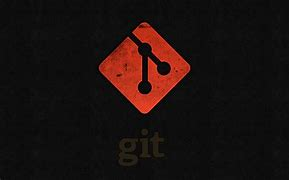

sistema de controle de versão moderno mais usado no mundo hoje é o Git. O Git é um projeto de código aberto maduro e com manutenção ativa desenvolvido em 2005 por Linus Torvalds
GitHub é uma plataforma online que hospeda códigos de programação desenvolvidos
Para enviar arquivos criados, alterados ou excluídos do repositório local para o servidor do GitHub, siga os seguintes passos:
git add para preparar os arquivos que deseja enviar.git commit para confirmar as mudanças localmente.git push para enviar as mudanças para o servidor do GitHub.Para atualizar os arquivos do repositório local com possíveis alterações feitas no servidor do GitHub, você pode usar o seguinte comando:
git pull
Após criar esta página HTML, você pode iniciar o versionamento do projeto e enviá-lo para o GitHub. Certifique-se de inicializar um repositório Git localmente, vinculá-lo ao repositório do GitHub e, em seguida, use os comandos git add, git commit e git push para enviar a página para o GitHub.